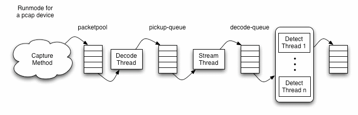
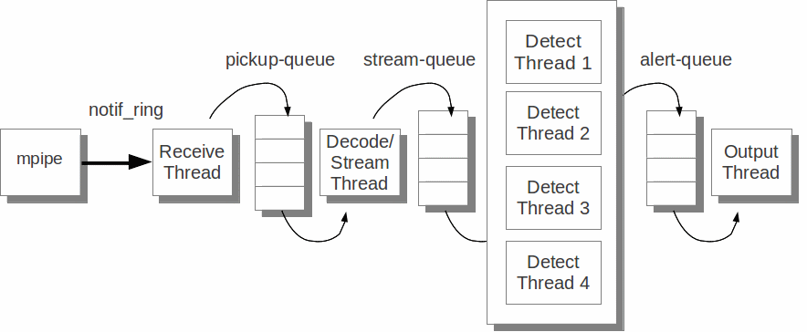
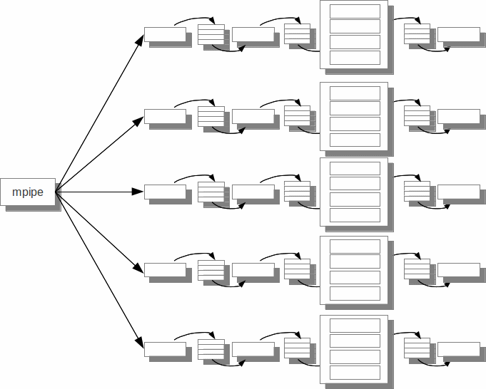

for Tilera
for Tilera
Suricata on Tilera
Suricata for Tilera has been modified to support Tilera's many core architecture. In addition the Tilera tilegx port of Suricata has been written to take advantage of Tilera's mpipe packet classification unit.
Tilera specific Suricata runmodes have been added to Suricata to take advantage of the combination of many core and mpipe.
Suricata Operation
Internally, Suricata generally looks like the following diagram:

However, the exact configuration of this processing path is determined by the Suricata runmode. Suricata on Tilera is generally more complex, making use of the multitude of tiles on the many core.
Suricata runmodes for Tilera
Suricata on Tilera is executed with the –mpipe command line option.
suricata -c /opt/suricata/etc/suricata.yaml --mpipeThis causes Suricata to run in either of two runmodes as configured in the suricata.yaml file.
Pipelined Auto Runmode
The “auto” runmode for mpipe is chosen bu setting the runmode parameter to auto in suricata.yaml. This is the default configuration if this configuration is eliminated, or commented out.
# Runmode custom mode the engine should run in. Please check –list-runmodes# to get the runmode custom modes that can be used here for a particular runmode.runmode: auto
This configuration causes Suricata to run as several parallel pipelines. Each individual pipeline consists of the following:

In order to consume the tiles available on the tilegx processor several copies of the above pipeline are operated in parallel as depicted in the following example.

Workers Runmode
The “workers” runmode is chosen by setting the runmode parameter to workers in suricata.yaml.
# Runmode custom mode the engine should run in. Please check –list-runmodes# to get the runmode custom modes that can be used here for a particular runmode.runmode: workers
This configuration causes Suricata to spawn a thread on nearly all of the available Tilera “dataplane” tiles. The Suricata processing pipeline will operate in a “run to completion” mode on each of these tiles. Generally the “workers” runmode provides the highest aggregate throughput.
The suricata.yaml File
Several sections of the suricata.yaml configuration file affect the operation of suricata on Tilera processors.
The max-pending-packets setting controls the overall number of packets processed by Suricata at any given time. This number is useful when operating suricata with the PCIe packet capture feature enabled in order to prevent packet loss which capturing packets at speeds higher than the rate at which Suricata packet processing is able to sustain.
# Number of packets allowed to be processed simultaneously. Default is a# conservative 50. a higher number will make sure CPU's/CPU cores will be# more easily kept busy, but will negatively impact caching.## If you are using the CUDA pattern matcher (b2g_cuda below), different rules# apply. In that case try something like 4000 or more. This is because the CUDA# pattern matcher scans many packets in parallel.max-pending-packets: 8192
The runmode configuration setting selects which runmode, workers or auto is chosen as described above. A typical configuration will likely choose the workers runmode.
# Runmode custom mode the engine should run in. Please check –list-runmodes# to get the runmode custom modes that can be used here for a particular runmode.runmode: workers
suricata.yaml contains two sections specific to Tilera. The mpipe: section controls configuration options and tunable parameters specific to the mpipe packet classifier and packet distribution system.
The tile: section configures the layout of the suricata processing pipeline when running in the Tilera auto runmode.
A typical suricata.yaml will contain something similar to the following:
# Tilera mpipe configuration. for use on Tilera tilegxmpipe:# Load balancing mode "static" or "dynamic".load-balance: dynamic# Enable packet capture to pciecapture:enabled: no# Timestamp option"linux" or "mpipe".timestamp: linux# List of interfaces we will listen on.inputs:- interface: xgbe1- interface: xgbe2- interface: xgbe3- interface: xgbe4# packet size scale factorsstack:size128: 2/16size256: 4/16size512: 0/16size1024: 0/16size1664: 9/16size4096: 0/16size10386: 1/16size16384: 0/16# number of queues to pollpoll: 2# Tilera runmode configuration. for use on Tilera tilepro and tilegxtile:# Number of parallel processing pipelinespipelines: 6# Number of detect threads per pipelinedetect-per-pipeline: 3# Inter-tile queueing method ("simple" or "tmc")queue: simplemica-memcpy: no
Suricata.yaml mpipe Configuration Section
The mpipe section contained in the suricata.yaml file controls suricata's utilization of the tilegx mpipe packet handling unit.
load-balance
The load-balance configuration within the mpipe section controls the packet distribution amongst the processing pipelines in both “auto” and “workers” runmodes. Distribution of packets to pipelines is always done on a flow-wise basis.
# Load
balancing mode "static" or "dynamic".
load-balance:
dynamic
The load-balance option takes either static or dynamic as a parameter. The load-balance parameter picks between the “fixed” and “dynamic flow affinity” modes of operation of the mpipe load balancer. See Section 6.2.9.4 of the Tilera Tile Processor and I/O Device Guide, UG404 for a description of the mpipe load balancer.
When load-balance is configured as static. All packets belonging to a given bidirectional flow will always be processed by the same pipeline in “auto” runmode and the same tile in “workers” runmode.
When load-balance is configured as dynamic. All packets belonging to a given bidirectional flow will always be processed by a single pipeline in “auto” runmode or single tile in “workers” runmode. However, after a flow has gone idle for some period when the flow resumes sending packets again it will be reassigned to the least busy pipeline or tile at packet arrival time. Setting load-balance to dynamic can lead to better performance of suricata under many traffic conditions.
timestamp
The timestamp configuration within the mpipe section controls how suricata obtains packet arrival timestamps used in packet processing and alert generation.
#
Timestamp option "linux"
or "mpipe".
timestamp:
linux
The timestamp option takes either linux or mpipe as a parameter.
When timestamp is configured as linux timestamps are taken from the Linux system time.
When timestamp is configured as mpipe timestamps are taken from the tilegx mpipe hardware timestamp generator. The mpipe hardware timestamp generator can be synchronized using IEEE 1588 Precision Time Protocol.
inputs
The inputs configuration section within the mpipe section sets the list of one or more interfaces from which suricata will process arriving packets.
# List of interfaces we will listen on.Inputs:- interface: xgbe1- interface: xgbe2- interface: xgbe3- interface: xgbe4
Valid 1 Gigabit Ethernet interfaces are gbe1, gbe2, gbe3 and gbe4. Valid 10 Gigabit Ethernet interfaces are xgbe1, xgbe2, xgbe3 and xgbe4.
The example above shows suricata listening to all four available 10 Gigabit Ethernet interfaces. However, fewer interfaces may be specified. Also a combination of 1 and 10 Gigabit Ethernet interfaces may be listed.
stack
The stack configuration section within the mpipe section configures the amount of memory available for use as packet buffers of each of the individual packet sizes supported by mpipe. sets the list of one or more interfaces from which suricata will process arriving packets. See Section 6.2.2 of the Tilera Tile Processor and I/O Device Guide, UG404 for a description of the mpipe packet buffer management capabilities.
# packet size scale factorsstack:size128: 2/16size256: 4/16size512: 0/16size1024: 0/16size1664: 9/16size4096: 0/16size10386: 1/16size16384: 0/16
The stack section configures the amount of memory allocated to each buffer size. The size parameter is expresses as a fraction of available packet buffer memory. For example, in the configuration above 9/16ths of the available memory will be utilized by packets up to 1664 bytes in length.
Suricata.yaml tile Configuration Section
The tile section contained in the suricata.yaml file controls suricata's pipeline configuration when Suricata is running in the “auto” runmode. When suricata is running in “workers” runmode this contents of this section has no effect.
Eight different packet buffer sizes are available to mpipe (128, 256, 512, 1024, 1664, 4096, 10368 and 16384 bytes),
Suricata Release 1.4 Features On Tilera
IPS and TAP Support
Suricata release 1.4 contains support for IPS and TAP operation. The support was implemented in a way that follows the model introduced for AF_PACKET IPS mode described here.
The IPS and TAP operating modes peer pairs of network interfaces and all packets received from one interface are sent to the other interface (if a signature with drop keyword does not fire on the packet). This provides a simple bridge between the pair of interfaces.
The following configuration will configure Suricata acting as IPS between interface xgbe2 and xgbe4:
# Tilera mpipe configuration. for use on Tilera tilegxmpipe:# Load balancing mode "static" or "dynamic".load-balance: dynamic# List of interfaces we will listen on.inputs:- interface: xgbe2copy-mode: ipscopy-iface: xgbe4- interface: xgbe4copy-mode: ipscopy-iface: xgbe2# number of queues to pollpoll: 2
Basically, we’ve got a configuration with two interfaces. Interface xgbe2 will copy all received packets to xgbe4 because of the copy-* configuration variable:
copy-mode: ips
copy-iface: xgbe4The configuration on xgbe4 is symmetric:
copy-mode: ips
copy-iface: xgbe2The copy-mode variable can take the following values:
ips: the drop keyword is honored and matching packet are dropped.
tap: no drop occurs, Suricata act as a bridge
Note, that mode can be different on the peered interfaces.
When the ips copy-mode is chosen the bridge will operate as an IPS, dropping packets that fire on a rule containing a drop keyword.
When the tap copy-mode is selected the bridge operates as an IDS operating as if it were attached to a tap on the bridge. A tap configuration is shown below.
# Tilera mpipe configuration. for use on Tilera tilegxmpipe:# Load balancing mode "static" or "dynamic".load-balance: dynamic# List of interfaces we will listen on.inputs:- interface: xgbe2copy-mode: tapcopy-iface: xgbe4- interface: xgbe4copy-mode: tapcopy-iface: xgbe2# number of queues to pollpoll: 2